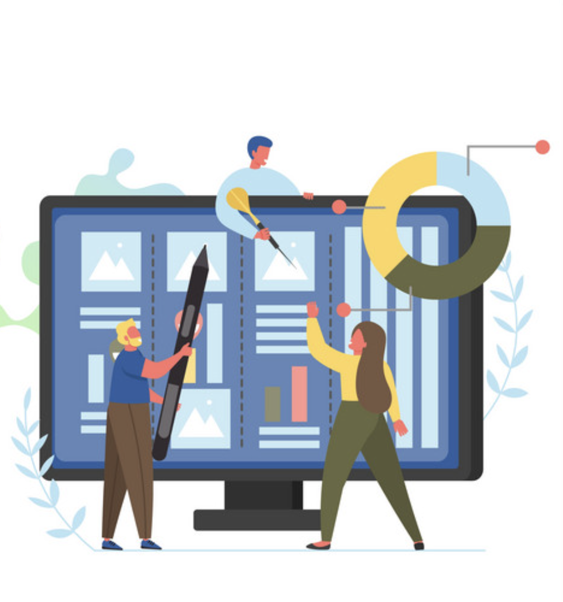

<div>
    <div class=hero-unit>
            <div class="hero-content">
                <h1>Kanban Board The one place for <b>remote teams</b> to work productively</h1>
                <p>Visualize Your Progress: Transform your project dashboard into a dynamic Kanban board, allowing you to easily track tasks, identify bottlenecks, and visualize the flow of work from 'To-Do' to 'Done</p> 
                <ul>
                    &#9989; &nbsp;Visualize project tasks and workflow stages for clear tracking. <br><hr>
                    &#9989; &nbsp;Enhance team collaboration with a dynamic, real-time Kanban board. <br><hr>
                    &#9989; &nbsp;Promote agility and adaptability through a flexible task management system. <br><hr>
                    &#9989; &nbsp;Streamline project progress from 'To-Do' to 'Done' with ease. <br><hr>
                    &#9989; &nbsp;Identify bottlenecks and optimize workflow for improved efficiency. <br><hr>
                </ul>
                <a routerLink="about-us"><button mat-raised-button color="primary">About Us</button></a>
            </div>
                
        </div>
</div>